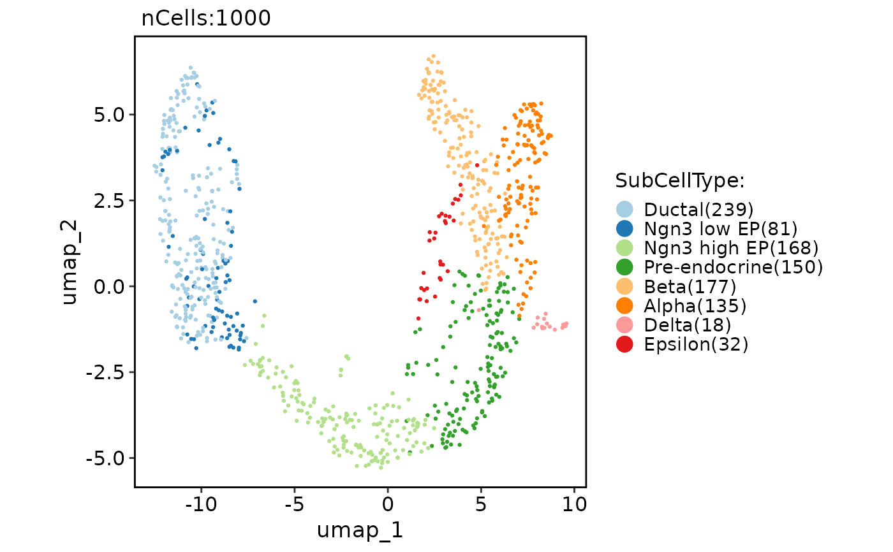

PAGA is a graph-based method used to infer cellular trajectories. This function runs the PAGA analysis on a Seurat object.
Usage
RunPAGA(
srt = NULL,
assay_X = "RNA",
slot_X = "counts",
assay_layers = c("spliced", "unspliced"),
slot_layers = "counts",
adata = NULL,
group_by = NULL,
linear_reduction = NULL,
nonlinear_reduction = NULL,
basis = NULL,
n_pcs = 30,
n_neighbors = 30,
use_rna_velocity = FALSE,
vkey = "stochastic",
embedded_with_PAGA = FALSE,
paga_layout = "fr",
threshold = 0.1,
point_size = 20,
infer_pseudotime = FALSE,
root_group = NULL,
root_cell = NULL,
n_dcs = 10,
n_branchings = 0,
min_group_size = 0.01,
palette = "Paired",
palcolor = NULL,
show_plot = TRUE,
save = FALSE,
dpi = 300,
dirpath = "./",
fileprefix = "",
return_seurat = !is.null(srt)
)Arguments
- srt
A Seurat object.
- assay_X
Assay to convert as the main data matrix (X) in the anndata object.
- slot_X
Slot name for assay_X in the Seurat object.
- assay_layers
Assays to convert as layers in the anndata object.
- slot_layers
Slot names for the assay_layers in the Seurat object.
- adata
An anndata object.
- group_by
Variable to use for grouping cells in the Seurat object.
- linear_reduction
Linear reduction method to use, e.g., "PCA".
- nonlinear_reduction
Non-linear reduction method to use, e.g., "UMAP".
- basis
The basis to use for reduction, e.g., "UMAP".
- n_pcs
Number of principal components to use for linear reduction. Default is 30.
- n_neighbors
Number of neighbors to use for constructing the KNN graph. Default is 30.
- use_rna_velocity
Whether to use RNA velocity for PAGA analysis. Default is FALSE.
- vkey
The name of the RNA velocity data to use if
use_rna_velocityis TRUE. Default is "stochastic".- embedded_with_PAGA
Whether to embed data using PAGA layout. Default is FALSE.
- paga_layout
The layout for plotting PAGA graph. See See layout param in scanpy.pl.paga function.
- threshold
The threshold for plotting PAGA graph. Edges for weights below this threshold will not draw.
- point_size
The point size for plotting.
- infer_pseudotime
Whether to infer pseudotime.
- root_group
The group to use as the root for pseudotime inference.
- root_cell
The cell to use as the root for pseudotime inference.
- n_dcs
TThe number of diffusion components to use for pseudotime inference.
- n_branchings
Number of branchings to detect.
- min_group_size
The minimum size of a group (as a fraction of the total number of cells) to consider it as a potential branching point.
- palette
The palette to use for coloring cells.
- palcolor
A vector of colors to use as the palette.
- show_plot
Whether to show the PAGA plot.
- save
Whether to save the PAGA plots.
- dpi
The DPI (dots per inch) for saving the PAGA plot.
- dirpath
The directory to save the PAGA plots.
- fileprefix
The file prefix to use for the PAGA plots.
- return_seurat
Whether to return a Seurat object instead of an anndata object. Default is TRUE.
Examples
data("pancreas_sub")
pancreas_sub <- RunPAGA(srt = pancreas_sub, assay_X = "RNA", group_by = "SubCellType", linear_reduction = "PCA", nonlinear_reduction = "UMAP")
#> Error in check_Python("scanpy"): could not find function "check_Python"
CellDimPlot(pancreas_sub, group.by = "SubCellType", reduction = "draw_graph_fr")
#> Warning: No shared levels found between `names(values)` of the manual scale and the data's fill values.

PAGAPlot(pancreas_sub, reduction = "UMAP")
#> Error in PAGAPlot(pancreas_sub, reduction = "UMAP"): Cannot find the paga result.
CellDimPlot(pancreas_sub, group.by = "SubCellType", reduction = "UMAP", paga = pancreas_sub@misc$paga)
#> Warning: No shared levels found between `names(values)` of the manual scale and the data's fill values.
 pancreas_sub <- RunPAGA(
srt = pancreas_sub, group_by = "SubCellType", linear_reduction = "PCA", nonlinear_reduction = "UMAP",
embedded_with_PAGA = TRUE, infer_pseudotime = TRUE, root_group = "Ductal"
)
#> Error in check_Python("scanpy"): could not find function "check_Python"
head(pancreas_sub[[]])
#> orig.ident nCount_RNA nFeature_RNA S_score G2M_score nCount_spliced nFeature_spliced
#> CAGCCGAAGCGATATA SeuratProject 10653 3295 0.33188155 0.54532743 10653 3295
#> AGTGTCATCGCCGTGA SeuratProject 4596 2053 -0.07156909 -0.08865353 4596 2053
#> GATGAAAAGTTGTAGA SeuratProject 14091 3864 0.08940628 0.77610326 14091 3864
#> CACAGTACATCCGTGG SeuratProject 5484 2510 -0.25927997 -0.25941831 5484 2510
#> CGGAGCTCATTGGGCC SeuratProject 7357 2674 -0.11764368 0.46237856 7357 2674
#> AGAGCTTGTGTGACCC SeuratProject 6498 2516 -0.11406432 -0.17830831 6498 2516
#> nCount_unspliced nFeature_unspliced CellType SubCellType Phase
#> CAGCCGAAGCGATATA 1587 1063 Ductal Ductal G2M
#> AGTGTCATCGCCGTGA 1199 803 Pre-endocrine Pre-endocrine G1
#> GATGAAAAGTTGTAGA 2166 1379 Ngn3 low EP Ngn3 low EP G2M
#> CACAGTACATCCGTGG 1339 859 Endocrine Beta G1
#> CGGAGCTCATTGGGCC 976 745 Ductal Ductal G2M
#> AGAGCTTGTGTGACCC 822 591 Ductal Ductal G1
names(pancreas_sub@reductions)
#> [1] "PCA" "UMAP"
FeatureDimPlot(pancreas_sub, features = "dpt_pseudotime", reduction = "PAGAUMAP2D")
#> Warning: dpt_pseudotime are not in the features of srt.
#> Error in FeatureDimPlot(pancreas_sub, features = "dpt_pseudotime", reduction = "PAGAUMAP2D"): There are no valid features present.
PAGAPlot(pancreas_sub, reduction = "PAGAUMAP2D")
#> Error in PAGAPlot(pancreas_sub, reduction = "PAGAUMAP2D"): Cannot find the paga result.
CellDimPlot(pancreas_sub, group.by = "SubCellType", reduction = "PAGAUMAP2D", paga = pancreas_sub@misc$paga)
#> Warning: No shared levels found between `names(values)` of the manual scale and the data's fill values.
pancreas_sub <- RunPAGA(
srt = pancreas_sub, group_by = "SubCellType", linear_reduction = "PCA", nonlinear_reduction = "UMAP",
embedded_with_PAGA = TRUE, infer_pseudotime = TRUE, root_group = "Ductal"
)
#> Error in check_Python("scanpy"): could not find function "check_Python"
head(pancreas_sub[[]])
#> orig.ident nCount_RNA nFeature_RNA S_score G2M_score nCount_spliced nFeature_spliced
#> CAGCCGAAGCGATATA SeuratProject 10653 3295 0.33188155 0.54532743 10653 3295
#> AGTGTCATCGCCGTGA SeuratProject 4596 2053 -0.07156909 -0.08865353 4596 2053
#> GATGAAAAGTTGTAGA SeuratProject 14091 3864 0.08940628 0.77610326 14091 3864
#> CACAGTACATCCGTGG SeuratProject 5484 2510 -0.25927997 -0.25941831 5484 2510
#> CGGAGCTCATTGGGCC SeuratProject 7357 2674 -0.11764368 0.46237856 7357 2674
#> AGAGCTTGTGTGACCC SeuratProject 6498 2516 -0.11406432 -0.17830831 6498 2516
#> nCount_unspliced nFeature_unspliced CellType SubCellType Phase
#> CAGCCGAAGCGATATA 1587 1063 Ductal Ductal G2M
#> AGTGTCATCGCCGTGA 1199 803 Pre-endocrine Pre-endocrine G1
#> GATGAAAAGTTGTAGA 2166 1379 Ngn3 low EP Ngn3 low EP G2M
#> CACAGTACATCCGTGG 1339 859 Endocrine Beta G1
#> CGGAGCTCATTGGGCC 976 745 Ductal Ductal G2M
#> AGAGCTTGTGTGACCC 822 591 Ductal Ductal G1
names(pancreas_sub@reductions)
#> [1] "PCA" "UMAP"
FeatureDimPlot(pancreas_sub, features = "dpt_pseudotime", reduction = "PAGAUMAP2D")
#> Warning: dpt_pseudotime are not in the features of srt.
#> Error in FeatureDimPlot(pancreas_sub, features = "dpt_pseudotime", reduction = "PAGAUMAP2D"): There are no valid features present.
PAGAPlot(pancreas_sub, reduction = "PAGAUMAP2D")
#> Error in PAGAPlot(pancreas_sub, reduction = "PAGAUMAP2D"): Cannot find the paga result.
CellDimPlot(pancreas_sub, group.by = "SubCellType", reduction = "PAGAUMAP2D", paga = pancreas_sub@misc$paga)
#> Warning: No shared levels found between `names(values)` of the manual scale and the data's fill values.